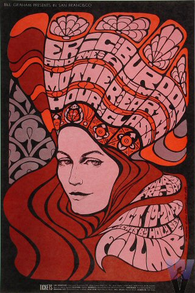
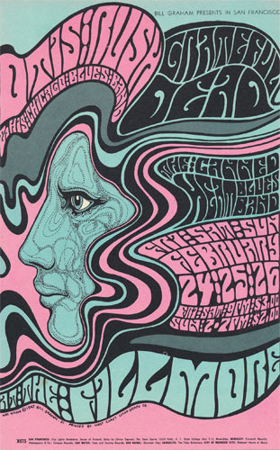
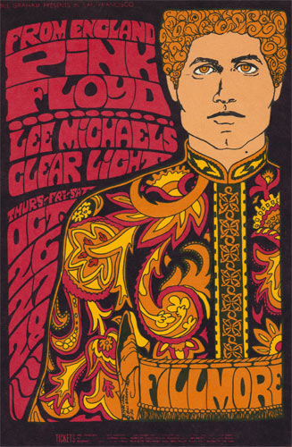
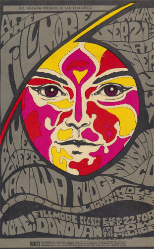
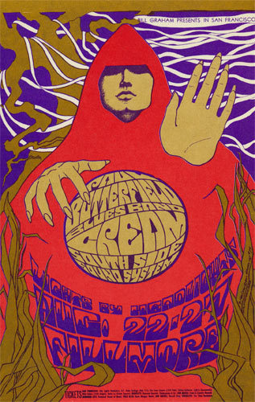

Hey there. We come from the Fillmore Theatre. We were born back in 1967 with a very specfic purpose. We didn't just give information for a show, but we captured what the essence of it could be. >

We represented the people you would meet, what kind of far-out trip you would have, or even reveal the mysteries of the universe. We were an acid test pop quiz on a telephone pole. >


<We were originally set out on phone poles around the Bay Area but chances are we didn't last there long. Our funky designs were even famous back then and we were often removed within hours of being put up.

< We are all siblings of the Bill Graham Poster series. There are a total os 289 of us. We were created from many artists in the Bay Area, including Bonnie Maclean and Wes Wilson.

< We are all siblings of the Bill Graham Poster series. There are a total os 289 of us. We were created from many artists in the Bay Area, including Bonnie Maclean and Wes Wilson.
Now many of us live at the Letterform Archive right in San Francisco. We are looked after well,and some of us hang up on the wall, with a unique lighting style similar to this. You may have missed our shows at the Fillmore but you can always come enjoy us here. >